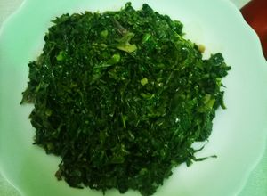

Sukuma

Sukuma Wiki Recipe
This is a simple recipe on how to cook delicious sukuma wiki (collard
greens) the Kenyan way.
Ingredients
- Sukuma Wiki (collard greens)
- Onion
- Tomato
- Cooking oil
- Salt
Steps
- Wash and finely chop the sukuma wiki.
- Heat oil in a pan and fry the onions until golden.
- Add chopped tomatoes and cook until soft.
- Add sukuma wiki and stir well.
- Cover and cook for 5–7 minutes until tender.
- Add salt to taste and serve hot.